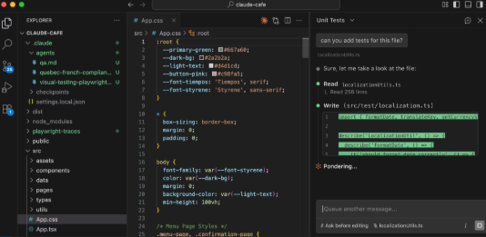
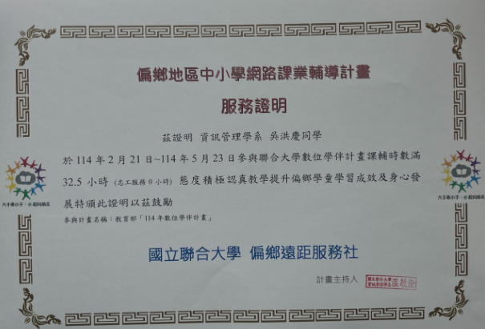
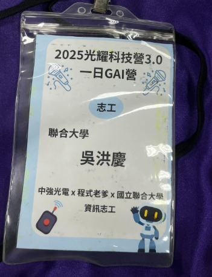
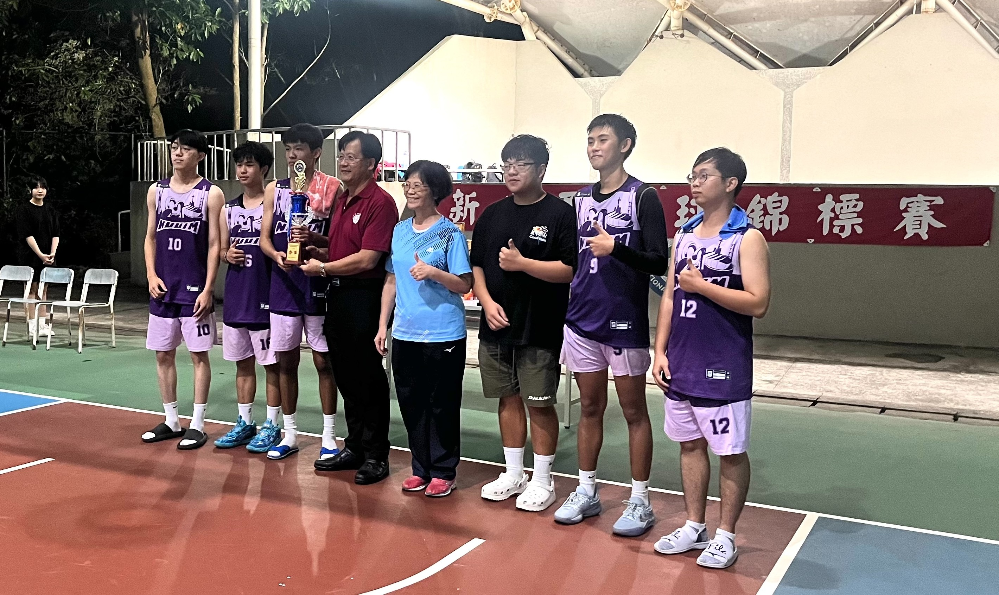

國立聯合大學 資訊管理學系 二年級
我是吳洪慶，來自金門。在學習的路上，我其實很清楚自己在有些學科的理解上，或是平常的口語表達，沒辦法像其他同學反應那麼快、那麼會講。但我上課都很盡力，老師交代的作業和進度我一定會想辦法拼完。
平常我喜歡健身，目標是想吃遍全台壽司跟登上全國健美舞台。我覺得我的執著和固著是缺點也是優點。在健身房，我可以為了練好一個動作練很久；在程式上也是，遇到複雜的 Bug 或是網頁邏輯卡住，我會坐在電腦前好幾個小時。雖然這種固著有時候會讓我鑽牛角尖、卡在同一個卡點出不來，需要老師或同學提點才發現自己走錯路，但也是因為這樣，才讓我能把程式基礎慢慢啃下來。我對自己的信心，建立在我的自制力上。
我忘記何時我決定以後要上中興大學資管研究所，但至少那是我現在的某個目標。
大一至大二上學期 系排名：第 4 名

觀察 Open Claw 之所以引發廣泛關注，背後有幾個相當明顯的趨勢原因。
第一，人工智慧正從生成式對話跨入Agent時代。過往的大語言模型本質上仍屬於主動問答的聊天型工具；然而 Open Claw 這類自動化工作流框架，核心在於賦予 AI 主動執行任務的能力。這意味著技術演進正在從單純的回答問題走向代替人類處理複雜工作。
第二，開源生態加速了技術的擴散與應用整合。作為開源平台，全球開發者可以自由修改架構、對接不同的底層模型並擴充專屬技能。舉凡網頁爬蟲、數據自動化處理、自動客服或流程整合，皆能無縫納入工作流中，這也是為何許多科技評論將其形容為AI 世代的 Linux。
第三，則是底層控制權的突破，AI 能夠直接與作業系統或瀏覽器進行交互。它不僅僅是生成文字，而是能透過工作流引擎接管滑鼠、鍵盤與既有的軟體流程。
科技圈之所以對此感到興奮，是因為這預示了下一個技術大浪潮的到來。系統從響應回答走向自動化執行。當自動化工作流框架走向成熟，影響的將不僅僅是軟體工具的更迭，而是整體工作範式的轉變。未來的系統建構可能不再是開啟多個應用程式手動切換，而是直接定義核心目標與邊界，由底層的工作流自動化去完成所有中間過程。


